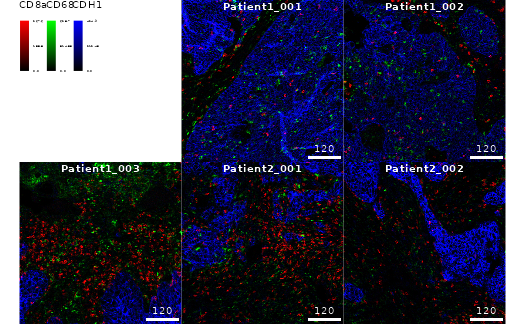
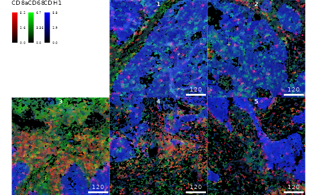
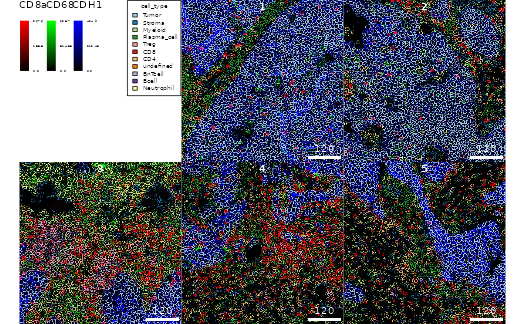

Accessing IMC datasets
Nicolas Damond
Department for Quantitative Biomedicine; University of ZurichInstitute of Molecular Health Sciences; ETH Zurichnicolas.damond@dqbm.uzh.ch
Nils Eling
Department for Quantitative Biomedicine; University of ZurichInstitute of Molecular Health Sciences; ETH Zurichnils.eling@dqbm.uzh.ch
Created: 02 November 2020; Compiled: 3 August 2026
Source:vignettes/imcdatasets.Rmd
imcdatasets.RmdIntroduction
The imcdatasets package provides access to publicly available datasets generated using imaging mass cytometry (IMC) (Giesen et al. 2014).
IMC is a technology that enables measurement of up to 50 markers from tissue sections at a resolution of 1 Giesen et al. (2014). In classical processing pipelines, such as the ImcSegmentationPipeline or steinbock, the multichannel images are segmented to generate cells masks. These masks are then used to extract single cell features from the multichannel images.
Each dataset in imcdatasets is composed of three
elements that can be retrieved separately:
1. Single-cell data in the form of a SingleCellExperiment
or SpatialExperiment class object (named
sce.rds).
2. Multichannel images in the form of a CytoImageList class
object (named images.rds).
3. Cell segmentation masks in the form of a CytoImageList
class object (named masks.rds).
Available datasets
The listDatasets() function returns all available
datasets in imcdatasets, along with associated information.
The FunctionCall column gives the name of the R function
that enables to load the dataset.
datasets <- listDatasets()
datasets <- as.data.frame(datasets)
datasets$FunctionCall <- sprintf("`%s`", datasets$FunctionCall)
knitr::kable(datasets)| FunctionCall | Species | Tissue | NumberOfCells | NumberOfImages | NumberOfChannels | Reference |
|---|---|---|---|---|---|---|
Damond_2019_Pancreas() |
Human | Pancreas | 252059 | 100 | 38 | Damond et al. (2019) |
HochSchulz_2022_Melanoma() |
Human | Metastatic melanoma | 325881 | 50 | 41 | Hoch et al. (2022) |
JacksonFischer_2020_BreastCancer() |
Human | Primary breast tumour | 285851 | 100 | 42 | Jackson et al. (2020) |
Zanotelli_2020_Spheroids() |
Human | Cell line spheroids | 229047 | 517 | 51 | Zanotelli et al. (2020) |
IMMUcan_2022_CancerExample() |
Human | Primary tumor | 46825 | 14 | 40 | None |
Meyer_2025_TripleNegativeBreastCancer() |
Human | Primary breast tumor | 257680 | 125 | 39 | Meyer et al. (2025) |
SteenbuckDamond_2026_T1D() |
Human | Pancreas | 17609072 | 120 | 79 | Steenbuck et al. (2026) |
Retrieving data
Users can import the datasets by calling a single function and specifying the type of data to retrieve. The following examples highlight accessing an example dataset linked to the IMMUcan project.
Importing single-cell expression data and metadata
sce <- IMMUcan_2022_CancerExample("sce")
sce## class: SingleCellExperiment
## dim: 40 47794
## metadata(5): color_vectors cluster_codes SOM_codes delta_area
## filterSpatialContext
## assays(2): counts exprs
## rownames(40): MPO H3 ... DNA1 DNA2
## rowData names(17): channel metal ... ilastik deepcell
## colnames(47794): 1_1 1_2 ... 14_2844 14_2845
## colData names(43): sample_id ObjectNumber ... cell_x cell_y
## reducedDimNames(8): UMAP TSNE ... seurat UMAP_seurat
## mainExpName: IMMUcan_2022_CancerExample_v1
## altExpNames(0):Importing multichannel images
images <- IMMUcan_2022_CancerExample("images")
images## CytoImageList containing 14 image(s)
## names(14): Patient1_001 Patient1_002 Patient1_003 Patient2_001 Patient2_002 Patient2_003 Patient2_004 Patient3_001 Patient3_002 Patient3_003 Patient4_005 Patient4_006 Patient4_007 Patient4_008
## Each image contains 40 channel(s)
## channelNames(40): MPO H3 SMA CD16 CD38 HLA_DR CD27 CD15 CD45RA CD163 B2M CD20 CD68 IDO1 CD3e LAG3 CD11c PD_1 PDGFRB CD7 GZMB PD_L1 TCF7 CD45RO FOXP3 ICOS CD8a CA9 CD33 Ki67 VISTA CD40 CD4 CD14 CDH1 CD303 CD206 c_PARP DNA1 DNA2Importing cell segmentation masks
masks <- IMMUcan_2022_CancerExample("masks")
masks## CytoImageList containing 14 image(s)
## names(14): Patient1_001 Patient1_002 Patient1_003 Patient2_001 Patient2_002 Patient2_003 Patient2_004 Patient3_001 Patient3_002 Patient3_003 Patient4_005 Patient4_006 Patient4_007 Patient4_008
## Each image contains 1 channelOn disk storage
Objects containing multi-channel images and segmentation masks can furthermore be stored on disk rather than in memory. Nevertheless, they need to be loaded into memory once before writing them to disk. This process takes longer than keeping them in memory but reduces memory requirements during downstream analysis.
To write images or masks to disk, set on_disk = TRUE and
specify a path where images/masks will be stored as .h5 files:
# Create temporary location
cur_path <- tempdir()
masks <- IMMUcan_2022_CancerExample(data_type = "masks", on_disk = TRUE,
h5FilesPath = cur_path)
masks## CytoImageList containing 14 image(s)
## names(14): Patient1_001 Patient1_002 Patient1_003 Patient2_001 Patient2_002 Patient2_003 Patient2_004 Patient3_001 Patient3_002 Patient3_003 Patient4_005 Patient4_006 Patient4_007 Patient4_008
## Each image contains 1 channelDataset info and metadata
Additional information about each dataset is available in the help page:
?IMMUcan_2022_CancerExampleThe metadata associated with a specific data object can be displayed as follows:
IMMUcan_2022_CancerExample(data_type = "sce", metadata = TRUE)
IMMUcan_2022_CancerExample(data_type = "images", metadata = TRUE)
IMMUcan_2022_CancerExample(data_type = "masks", metadata = TRUE)Usage
The SingleCellExperiment class objects can be used for
data analysis. For more information, please refer to the SingleCellExperiment
package and to the Orchestrating
Single-Cell Analysis with Bioconductor workflow.
The CytoImageList class objects can be used for plotting
cell and pixel information. Some typical use cases are given below. For
more information, please see the cytomapper
package and the associated
vignette.
Subsetting the images and masks
cur_images <- images[1:5]
cur_masks <- masks[1:5]Plotting pixel information
The images objects can be used to display pixel-level
data.
plotPixels(
cur_images,
colour_by = c("CD8a", "CD68", "CDH1"),
bcg = list(
CD8a = c(0,4,1),
CD68 = c(0,5,1),
CDH1 = c(0,5,1)
)
)
Plotting cell information
The masks and sce objects can be combined
to display cell-level data.
plotCells(
cur_masks, object = sce,
img_id = "image_number", cell_id = "cell_number",
colour_by = c("CD8a", "CD68", "CDH1"),
exprs_values = "exprs"
)
Outlining cells on images
Cell information can be displayed on top of images by combining the
images, masks and sce
objects.
plotPixels(
cur_images, mask = cur_masks, object = sce,
img_id = "image_number", cell_id = "cell_number",
outline_by = "cell_type",
colour_by = c("CD8a", "CD68", "CDH1"),
bcg = list(
CD8a = c(0,5,1),
CD68 = c(0,5,1),
CDH1 = c(0,5,1)
)
)
Session info
## R version 4.6.1 (2026-06-24)
## Platform: x86_64-pc-linux-gnu
## Running under: Ubuntu 24.04.4 LTS
##
## Matrix products: default
## BLAS: /usr/lib/x86_64-linux-gnu/openblas-pthread/libblas.so.3
## LAPACK: /usr/lib/x86_64-linux-gnu/openblas-pthread/libopenblasp-r0.3.26.so; LAPACK version 3.12.0
##
## locale:
## [1] LC_CTYPE=C.UTF-8 LC_NUMERIC=C LC_TIME=C.UTF-8
## [4] LC_COLLATE=C.UTF-8 LC_MONETARY=C.UTF-8 LC_MESSAGES=C.UTF-8
## [7] LC_PAPER=C.UTF-8 LC_NAME=C LC_ADDRESS=C
## [10] LC_TELEPHONE=C LC_MEASUREMENT=C.UTF-8 LC_IDENTIFICATION=C
##
## time zone: UTC
## tzcode source: system (glibc)
##
## attached base packages:
## [1] stats4 stats graphics grDevices utils datasets methods
## [8] base
##
## other attached packages:
## [1] imcdatasets_1.21.3 SpatialExperiment_1.22.0
## [3] cytomapper_1.24.0 EBImage_4.54.0
## [5] SingleCellExperiment_1.34.0 SummarizedExperiment_1.42.0
## [7] Biobase_2.72.0 GenomicRanges_1.64.0
## [9] Seqinfo_1.2.0 IRanges_2.46.0
## [11] S4Vectors_0.50.1 BiocGenerics_0.58.1
## [13] generics_0.1.4 MatrixGenerics_1.24.0
## [15] matrixStats_1.5.0 BiocStyle_2.40.0
##
## loaded via a namespace (and not attached):
## [1] DBI_1.3.0 bitops_1.1-0 httr2_1.3.0
## [4] gridExtra_2.3.1 rlang_1.3.0 magrittr_2.0.5
## [7] svgPanZoom_0.3.4 shinydashboard_0.7.3 otel_0.2.0
## [10] RSQLite_3.53.3 compiler_4.6.1 png_0.1-9
## [13] systemfonts_1.3.2 fftwtools_0.9-11 vctrs_0.7.3
## [16] crayon_1.5.3 pkgconfig_2.0.3 fastmap_1.2.0
## [19] dbplyr_2.6.0 magick_2.9.1 XVector_0.52.0
## [22] promises_1.5.0 rmarkdown_2.31 ggbeeswarm_0.7.3
## [25] ragg_1.5.2 purrr_1.2.2 bit_4.6.0
## [28] xfun_0.60 cachem_1.1.0 jsonlite_2.0.0
## [31] blob_1.3.0 later_1.4.8 rhdf5filters_1.24.1
## [34] DelayedArray_0.38.2 Rhdf5lib_2.0.0 BiocParallel_1.46.0
## [37] jpeg_0.1-11 tiff_0.1-12 terra_1.9-34
## [40] parallel_4.6.1 R6_2.6.1 bslib_0.11.0
## [43] RColorBrewer_1.1-3 jquerylib_0.1.4 Rcpp_1.1.2
## [46] bookdown_0.47 knitr_1.51 httpuv_1.6.17
## [49] Matrix_1.7-5 nnls_1.6 tidyselect_1.2.1
## [52] abind_1.4-8 yaml_2.3.12 viridis_0.6.5
## [55] codetools_0.2-20 curl_7.1.0 lattice_0.22-9
## [58] tibble_3.3.1 withr_3.0.3 KEGGREST_1.52.2
## [61] shiny_1.14.0 S7_0.2.2 evaluate_1.0.5
## [64] desc_1.4.3 BiocFileCache_3.2.0 Biostrings_2.80.1
## [67] ExperimentHub_3.2.0 filelock_1.0.3 pillar_1.11.1
## [70] BiocManager_1.30.27 sp_2.2-3 RCurl_1.98-1.19
## [73] BiocVersion_3.23.1 ggplot2_4.0.3 scales_1.4.0
## [76] xtable_1.8-8 glue_1.8.1 tools_4.6.1
## [79] AnnotationHub_4.2.2 locfit_1.5-9.12 fs_2.1.0
## [82] rhdf5_2.56.0 grid_4.6.1 AnnotationDbi_1.74.0
## [85] raster_3.6-32 beeswarm_0.4.0 HDF5Array_1.40.0
## [88] vipor_0.4.7 cli_3.6.6 rappdirs_0.3.4
## [91] textshaping_1.0.5 S4Arrays_1.12.0 viridisLite_0.4.3
## [94] svglite_2.2.2 dplyr_1.2.1 gtable_0.3.6
## [97] sass_0.4.10 digest_0.6.39 SparseArray_1.12.2
## [100] rjson_0.2.23 htmlwidgets_1.6.4 farver_2.1.2
## [103] memoise_2.0.1 htmltools_0.5.9 pkgdown_2.2.1
## [106] lifecycle_1.0.5 httr_1.4.8 h5mread_1.4.0
## [109] mime_0.13 bit64_4.8.2